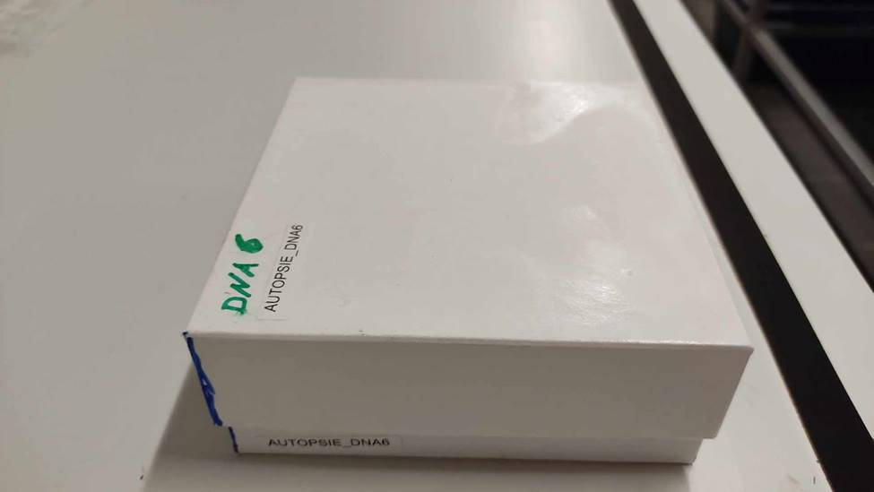
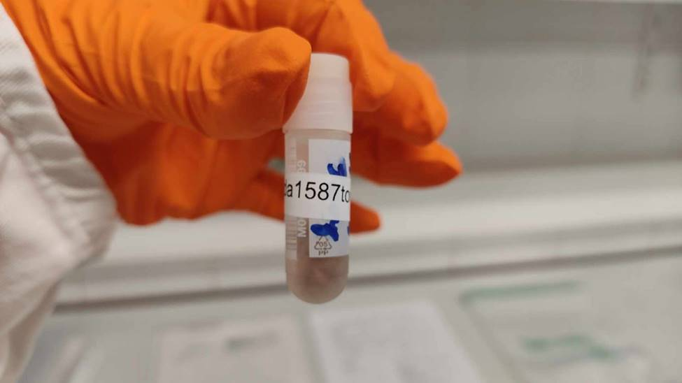

Substaal spierweefsel zoogdieren
Emily Veltjen
 0000-0002-3170-3345
0000-0002-3170-3345
Instituut voor Natuur- en Bosonderzoek (INBO)
emily.veltjen@inbo.be
Robin Bovijn
0009-0007-8190-7470
robin.bovijn@gmail.com
Filip Berlengee
0009-0008-7215-4494
Instituut voor Natuur- en Bosonderzoek (INBO)
filip.berlengee@inbo.be
Kurt Schamp
0009-0001-4169-7057
Instituut voor Natuur- en Bosonderzoek (INBO)
kurt.schamp@inbo.be
Sabrina Neyrinck
0000-0002-7379-9269
Instituut voor Natuur- en Bosonderzoek (INBO)
sabrina.neyrinck@inbo.be
Karen Cox
0000-0002-8621-3773
Instituut voor Natuur- en Bosonderzoek (INBO)
karen.cox@inbo.be
Kristof Baert
0000-0002-1910-1114
Instituut voor Natuur- en Bosonderzoek (INBO)
kristof.baert@inbo.be
2025-06-18
10.5281/zenodo.15688222
Metadata
| reviewers | documentbeheerder | protocolcode | versienummer | taal |
|---|---|---|---|---|
| Anneleen Rutten | Hans Van Calster | sop-041-nl | 2025.02 | nl |
Controleer deze tabel om te zien of een meer recente versie beschikbaar is.
1 Wijzigingen t.o.v. vorige versies
1.1 2025.02
- Dit is de eerste versie. Geen wijzigingen.
2 Samenvatting
2.1 Doelstelling
De INBO-zoogdierweefselcollectie bevat diverse type specimens afkomstig van zoogdieren: spierweefsel, vetweefsel, stalen van organen en tanden. Deze specimens zijn waardevol doordat ze zijn gelinkt aan ecologische autopsie- en/of projectdata. De specimens worden in collectie gebracht ter (her)gebruik voor verschillende doeleinden waaronder genetisch onderzoek, toxicologische analyses, analyses van ziekten en exacte leeftijdsbepalingen. Het betreft specimens van zoogdieren zoals carnivoren (oa. das, wolf, wasbeer), knaagdieren (oa. rat, bever) en hoefdieren (oa. ree, damhert, sikahert).
Sommige van de weefsels werden tot op heden in hun geheel ingezameld (bv. complete tong), daar dit tijd uitspaart tijdens het uitvoeren van de autopsies, alsook verzekert dat er voldoende weefsel beschikbaar is voor toekomstige analyses. De beschikbare opslagcapaciteit zit echter aan zijn limiet. De algemene doelstelling is om het volume weefsel in langetermijnopslag te verkleinen.
2.2 Toepassingsgebied
Deze SOP beschrijft hoe een substaal te nemen van dierlijk spierweefsel dat reeds diepgevroren bewaard zit (ca. -20 °C), met als doel het te bewaren om op een later tijdstip DNA te extraheren.
2.3 Niet binnen het toepassingsgebied
Deze SOP beschrijft niet:
- Hoe de verschillende spierweefsels werden ingezameld.
- Hoe de uitgevoerde handeling te loggen in een centraal digitaal beheersysteem zoals een collectie management systeem (CMS).
- De procedure(s) van de DNA-extractie(s).
De handelingen zijn niet (met zekerheid) overdraagbaar op:
- Andere types ingezamelde weefsels dan spierweefsel.
- Ingezamelde (spier)weefsels in opslag op afwijkende temperaturen (bijvoorbeeld -80°C of -196°C).
3 Voorbereidingen
3.1 Veiligheid
PBM: Bij de handelingen dienen de volgende persoonlijke beschermingsmiddelen (PBM) worden te gedragen:
- Handschoenen met PPE categorie III (Regulation (EU) 2016/425), met bescherming tegen chemische risico’s, micro-organismen en virussen (bv. SHIELDskin XTREMETM ORANGE NITRILETM 300 DI of gelijkwaardig). Wanneer een handschoen is beschadigd, dient deze meteen in het desbetreffende afvalvat (zie verder) te worden gedeponeerd en vervangen door een nieuwe handschoen.
- Labojas
- Gesloten schoenen
- Optioneel: een veiligheidsbril
Ongevallen: De procedure omvat snijden met een scalpel. Dit houdt het risico in op snijwonden/steekwonden. Alvorens te starten met de procedure, controleert de uitvoerder de volgende kennis:
- Het is bekend wie de EHBO verantwoordelijke is.
- Het is bekend waar EHBO benodigdheden te vinden zijn.
- Het is bekend welke stappen te ondernemen bij een snijwond/steekwond.
- Het is bekend wat je rechten en plichten zijn inzake werkongevallen.
- De uitvoerder heeft het statuut om deze handeling uit te voeren; de uitvoerder is verzekerd voor werkongevallen. Let op met studenten, stagiaires en vrijwilligers.
Hygiëne: De procedure bevat dierlijke weefselstalen, ter algemene hygiëne en met de mogelijkheid van ziektes aanwezig in de weefselstalen:
- De handelingen gaan door in een ingericht snijlokaal. De ruimte is goed verlucht en heeft geen/weinig passage van andere werknemers. De ruimte is voorzien van een snijtafel en wasbak.
- Indien tijdens het uitvoeren van de procedure het nodig is om materiaal (gsm, lichtschakelaar, deurklinken, ..) te gebruiken, worden de handschoenen vervangen door schone handschoenen.
- Het is de uitvoerders bekend waar de vuile labojassen worden geplaatst op het einde van de werkdag zodat deze worden gewassen volgens de juiste procedure.
- Na het uitvoeren van de procedure worden de handen goed gewassen met zeep. Bij enig contact van dierlijk weefsel (bijvoorbeeld: bloed) met de huid, wordt de huid grondig gewassen met zeep.
Afval:
- Het is de uitvoerders bekend voor het starten van de procedure welke lekvrije, kleine afvalcontainer ze mogen gebruiken in de ruimte. Deze kleine afvalcontainer zal dienen voor tijdelijke opslag van het deel dierlijke weefsel dat wordt weggegooid na verkleinen van het opslagvolume. Deze kleine container is lekvrij. (Uiteindelijke afvalvat: Rendac container).
- Er is een tweede kleine afvalcontainer voor gecontamineerde handschoenen, zakjes, papieren doeken, … Deze kleine container is lekvrij. (Uiteindelijke afvalvat: restafval).
- Bij het uitvoeren van de handelingen met de dierlijke weefsels, worden zoveel mogelijk dierlijke resten in de kleine container gegooid en wordt bij het wassen van materiaal aan de kraan het aantal aanwezige dierlijke resten tot een absoluut minimum beperkt.
- Scalpelmesjes gaan in de daartoe bestemde “risicohoudend medisch afval (RMA)” container (bv. Sharpsafe® container).
- Het is de uitvoerders bekend voor het starten van de procedure waar de grote groene afvalcontainers staan (“Rendac containers”), die worden afgehaald door een gespecialiseerde afvalverwerkingsdienst (bijvoorbeeld: Rendac), om de kleine containers in te legen op het einde van de werksessie.
Ergonomie: Het ingerichte snijlokaal is voorzien van een snijtafel op werkhoogte zodat de rug niet wordt belast.
3.2 Materiaal
- Papieren doeken
- Zwarte plastic bakjes
- Scalpelhouder nr 24
- Mesjes voor scalpel nr 24 (Norton)
- Pincet/forceps (dunne tips)
- Maatbeker voor absolute ethanol toe te voegen aan de cryovials (schoon)
- Maatbeker voor materiaal in te ontsmetten tussen twee specimens (vuil)
- Geprinte koude bestendige labels. 2 labels per doosje. 1 label per cryovial. (bv.: Brady® Freezerbondz™ labels)
- Stift
- 2 mL koudebestendige cryovials met schoefdop (bv.: cryobuisje 2ml met 1D barcode - externe schroefdraad, ronde bodem, steriel, gegradueerd met schrijfvlak, CLEARLINE)
- Rekje voor cryovials (bv. rack for Nalgene® cryogenic vials)
- Pipet
- Bewaardozen (bv.: Cryobox Alpha H50mm 136x136mm - wit - hydrofoob karton zonder raster) + raster (bv.: cryoboxraster Alpha voor 10x10 pl, H30mm, voor tubes tot ø12.5mm)
3.3 Reagentia
- Pursept® AF (Schülke & Mayr GmbH) ter eerste reiniging van de oppervlaktes (zie Bijlage A voor de Safety Data Sheet).
- Norvanol ter tweede reiniging van de oppervlaktes (zie Bijlage B voor de Safety Data Sheet).
- Absolute ethanol (bv.: Ethanol absolute AnalaR NORMAPUR® Reag. Ph. Eur., Reag. USP, ACS; VWR) (zie Bijlage C voor de Safety Data Sheet).
3.4 Bestanden / Informatie
- De collectie-inventaris: je kan opzoeken, of hebt de informatie gekregen, waar de weefsels die je wenst te verkleinen zich momenteel bevinden. Deze informatie bekom je via de collectie-archivaris.
- Bestand van de bewaardoos: je hebt toegang tot de file waar je de plaats van de nieuw bekomen substalen nauwgezet in moet loggen, of je hebt de informatie gekregen, waar de bekomen substalen moeten worden geplaatst in de bewaardoos. Deze informatie bekom je via de collectie-archivaris.
3.5 Personeel
Geen specifieke vereisten voor het uitvoeren van de procedure. De procedure vereist wel samen te werken met de collectie-archivaris. Alternatief: af te stemmen met / op te leiden door de collectie-archivaris om correct in de bestanden informatie te loggen.
3.6 Afhankelijkheden van andere protocollen
Afhankelijk van het printen van cryobestendige labels met een labelprinter. Bij INBO staat dit gedocumenteerd in SIP203-B1. SIP203-B1 staat niet op deze INBO-protocolwebsite, maar staat op de interne institutionele drive. SIP203-B1 is gebaseerd op de handleiding van de labelprinter.
| Protocol code | Version number | params | Included as subprotocol |
|---|---|---|---|
| NA | NA | NA | NA |
5 Stappenplan
5.1 Voorbereiden van de labels
Ter info: dit kan (geruime tijd) op voorhand worden uitgevoerd, voor de snijhandelingen. Dit wordt uitgevoerd door de collectie-archivaris.
- De volgende 100 stalen waarvan het weefsel te verkleinen is uit de inventaris worden ingeladen in een nieuwe “doosfile” (zoals bepaald door het sjabloon - zie voorbeeld in Bijlage D), waarbij een opeenvolgend doosnummer (bv. AUTOPSIE_DNA5) wordt toegekend. Hierbij wordt aandacht besteed aan het aanmaken van een duplicaat van elke spierstaal (hart, tong of spier). Bijvoorbeeld da0123tong1 en da0123tong2 voor de tong van das da0123. Wanneer er twee types spierweefsel zijn bemonsterd: bv. het hart en de tong, wordt voor elk 1 label gemaakt bv. da0123tong1 en da0123hart1.
- De 100 unieke codes die op de cryovials moeten hangen, nl. de specimen IDs (bv. da0123tong1, da0123tong2, da0124tong1, da0124tong2, …), worden samen met een het unieke doosnummer (bv. AUTOPSIE_DNA5) in een eenvoudige spreadsheet gekopieerd waarbij alle te printen labels in kolom A onder elkaar staan. Er is 1 file, en dus 1 printlint per doos.
- De spreadsheet met de te printen labels, wordt overgemaakt naar de verantwoordelijke om de labels te printen (bv. zoals beschreven in SIP203-B1).
5.2 Voorbereiden dozen en cryovials
Ter info: dit kan (geruime tijd) op voorhand worden uitgevoerd, voor de snijhandelingen.
- Alle werkoppervlakken worden grondig gereinigd met Pursept® AF, gevolgd door Norvanol. Hiervoor wordt een papieren doek gebruikt. Na reinigen wordt de papieren doek in het kleine afvalvat gegooid.
- De bewaardoos wordt klaargemaakt: de dozen worden dubbel gelabeld. Het onderste deel van de doos wordt aan de linkerwand gelabeld, zodat het label zichtbaar is als de doos is gesloten. Het deksel van de doos wordt gelabeld bovenaan, in de linkerbovenhoek.

- De cryovials worden rondom rond gelabeld met de unieke specimen ID (bv. da0123tong1). De tekst op het label is volledig leesbaar.

- De cryovials worden gevuld tot 1.5 ml met absolute ethanol met behulp van de maatbeker en de pipet.
- De cryovials worden op volgorde van linksboven tot rechtsonder geplaatst. De twee duplicaten telkens naast elkaar. Vijf individuen per rij.
- Elk specimen (specimen ID) zit op de positie in de bewaardoos, zoals het aangegeven in het ingevulde sjabloon (zie voorbeeld bijlage D).
- De bewaardoos wordt in de -20°C collectiediepvries geplaatst.
- Er wordt gelogd wat de positie is van de bewaardoos in de collectiediepvries. Dit gebeurt in samenspraak met, of op instructie van, de collectie-archivaris.
5.3 Voorbereiden van de snijhandelingen
Ter info: Voorbereiden van de snijhandelingen, Monstervoorbehandeling, Nemen van de substaal en Concluderen van de werksessie, dienen opeenvolgend (dezelfde werkdag) te worden uitgevoerd.
- Alle werkoppervlakken worden grondig gereinigd met Pursept® AF, gevolgd door Norvanol. Hiervoor wordt een papieren doek gebruikt. Na reinigen wordt de papieren doek in het kleine afvalvat gegooid.
- De eerste maatbeker wordt met absolute ethanol gevuld om het materiaal te ontsmetten tussen twee specimens.
- De tweede maatbeker wordt met absolute ethanol gevuld om de cryovials nog bij te vullen, indien nodig. Plaats deze verder weg van de werktafel en plaats de pipet er in om duidelijk visueel verschil te houden met de ethanol ter ontsmetting.
- Het scalpelmesje wordt op de scalpelhouder geplaatst.
- De forceps wordt ontsmet in de absolute ethanol. Plaats deze in de maatbeker.
5.4 Monstervoorbehandeling
Ter info: Voorbereiden van de snijhandelingen, Monstervoorbehandeling, Nemen van de substaal en Concluderen van de werksessie, dienen opeenvolgend (dezelfde werkdag) te worden uitgevoerd.
- Haal uit de bewaardoos: een rij cryovials gevuld met ethanol maar nog geen weefsel (10 stuks) en plaats in het rekje voor de cryovials. Dit betreft 5 kadavers, voor elk twee cryovials (duplicaten). Hierbij aandacht besteden om de cryovials niet open te laten zodat er niet teveel ethanol verdampt. Indien je wenst deze op voorhand al te openen (los te schroeven), kan dit, maar zet de dopjes dan op de cryovials van het specimen waar je NIET mee bezig bent, zodat je niet per ongeluk weefsel met ID X laat vallen de cryovial met ID Y (= contaminatie).
- Haal de 5 overeenkomstige diepgevroren spierweefsels van de kadavers met dezelfde kadaver-IDs (zijnde: tongen, harten, stukken beenspier) uit de diepvries. De plaats van de stalen kan teruggevonden worden in de collectie-inventaris. (Vraag hulp aan de collectie-archivaris indien je deze collectie-inventaris niet weet zijn).
- Breng de 10 cryovials en 5 diepgevroren spierweefsels van de kadavers naar het snijlokaal ter verwerking.
- Controleer op het zakje het nummer van de das en het type weefsel of deze overeenkomen met wat er op het label geprint staat. Heb hierbij aandacht dat er soms twee weefsels zijn, bv. hart en tong voor eenzelfde das.
5.5 Nemen van de substaal
Ter info: Voorbereiden van de snijhandelingen, Monstervoorbehandeling, Nemen van de substaal en Concluderen van de werksessie, dienen opeenvolgend (dezelfde werkdag) te worden uitgevoerd.
- Plaats elk van de 5 specimens in een apart zwart bakje ter ontdooien, leg het zakje met het identificatienummer mee in het bakje.
- Plaats het diepgevroren spierweefsel van één kadaver (bvb. tong, hart, stuk beenspier) op de grondig gereinigde inox werktafel.
- Controleer een laatste maal of het type weefsel dat ontdooid inderdaad tong, hart of een stuk beenspier is zoals genoteerd. Het komt ook soms voor dat twee type weefsels in 1 zakje zitten (bv. hart en tong).
- Snij van het bevroren weefsel een stuk buitenlaag weg, zodat je enkel met weefsel overblijft dat niet buitenaan zat (dit kwam mogelijks in aanraking met gecontamineerd bloed en met het plastic van de ziploc zakjes / de zwarte bakjes).
- Snij het bevroren weefsel in grove stukken met de scalpel en forceps. Indien het weefsel nog te hard is, even wachten.
- Kies het meest roze spierweefsel (niet: zwart of bruin).
- Snij een 10-tal kleine blokjes (ongeveer 0.5 cm²) spierweefsel van het geselecteerde roze spierweefsel.
- Vul mbv de forceps de twee cryovials met hetzelfde ID nummer (bv da1234) als het kadaver elk met een vijftal blokjes spierweefsel. De cryovial zou op het einde een verhouding van 1/6 weefsel tot 5/6 ethanol moeten hebben. Let op dat je niet teveel weefsel in een cryovial steekt, dat verdunt de ethanol en het vrijgekomen water laat het DNA in de staal degraderen. Vul eventueel nog aan met absolute ethanol indien de cryovial niet vol is.
- Sluit de cryovials stevig en plaats ze terug in het rekje.
- Deponeer het overschot diepgevroren spierweefsel en het vorige opslagvat (bv. potje of zakje) in de kleine afvalcontainer.
- Reinig het snijoppervlak met Pursept® AF, gevolgd door Norvanol. Hiervoor wordt een papieren doek gebruikt. Na reinigen wordt de papieren doek in het kleine afvalvat gegooid.
- De scalpel, pincet en handen (met handschoenen) worden afgespoeld met water onder de kraan.
- De scalpel en pincet worden geplaatst in de maatbeker met absolute ethanol ter ontsmetting. De scalpel en pincet mogen bewogen worden in de ethanol zodat alle weefselrestanten loslaten.
- De handschoenen worden met Pursept® AF ontsmet.
- Herhaal tot de vijf diepgevroren spierstalen (bvb. tongen, harten, stukken beenspier) zijn verwerkt tot de 10 cryovials. TIP: indien je nog een reeks van 10 cryovials zal doen, kan je ongeveer 10-15 minuten voor de start van de volgende reeks spierweefsel van de vijf individuen uitleggen ter ontdooien.
- Plaats de 10 gevulde cryovials terug in de bewaardoos in de collectiediepvries. Spoel de vijf zwarte bakken met water. Reinig de bakjes met Pursept® AF, gevolgd door Norvanol. Hiervoor wordt een papieren doek gebruikt. Na reinigen wordt de papieren doek in het kleine afvalvat gegooid.
- Herhaal de handeling “Monstervoorbehandeling” en “Nemen van de substaal” naargelang wens. Reinig telkens de werktafel grondig met Pursept® AF, gevolgd door Norvanol. Ten alle tijde wil je contaminatie van de stalen voorkomen. Ga naar “Concluderen van de werksessie” bij einde.
5.6 Concluderen van de werksessie
Ter info: Voorbereiden van de snijhandelingen, Monstervoorbehandeling, Nemen van de substaal en Concluderen van de werksessie, dienen opeenvolgend (dezelfde werkdag) te worden uitgevoerd.
- Plaats de bewaardoos (of indien van toepassing: bewaardozen) met de nieuw gecreëerde substalen op de voorziene (en gelogde) plaats in de -20°C collectie diepvries.
- Alle werkoppervlakken worden grondig gereinigd met Pursept® AF, gevolgd door Norvanol. Hiervoor wordt een papieren doek gebruikt. Na reinigen wordt de papieren doek in het kleine afvalvat gegooid.
- Al het gecontamineerde afval wordt in de juiste containers geleegd.
- Alle materialen (forceps, scalpel, zwarte doosjes ..) worden teruggeplaatst op de voorziene plaatsen.
- De gecontamineerde labojassen worden op de juiste plaats gelegd.
- Er wordt gelogd welke stalen werden behandeld aan de collectie-archivaris. Indien er problemen waren (bv. een staal niet gevonden, een fout label, ..) worden deze gerapporteerd zodat de collectie-inventaris correct wordt bijgehouden, er nieuwe labels worden geprint, … voor de volgende werksessie.
6 Definities
Collectie-archivaris: Deze persoon is verantwoordelijk voor het fysieke beheer van deze collectie. Hij/zij heeft de taak dat de opslaglocatie van elk staal wordt bijgehouden in de inventarissen.
SOP: Standard Operating Procedure: established or prescribed methods to be followed routinely for the performance of designated operations or in designated situations (bron: Merriam webster). Vrije Nederlands vertaling: vastgestelde of voorgeschreven methoden die routinematig moeten worden gevolgd voor de uitvoering van aangewezen activiteiten of in aangewezen situaties.
Marternetwerk: Het Marternetwerk is een netwerk van ca. 130 vrijwillige medewerkers, die daartoe over de nodige individuele vergunningen beschikken, en bereid zijn in Vlaanderen dood gevonden dieren op te halen, ter ecologische autopsie bij INBO. Zij hebben, verspreid over heel Vlaanderen, ca. 40 diepvriezers ter beschikking om dode dieren in te bewaren. Deze vrijwilligers worden aangestuurd en beheerd door INBO-medewerkers. Voor meer informatie, zie: https://www.vlaanderen.be/inbo/marternetwerk/
C Bijlage C: Safety Data Sheet Ethanol
Zie Safety Data Sheet Ethanol absolute AnalaR NORMAPUR® Reag. Ph. Eur., Reag. USP, ACS; VWR)